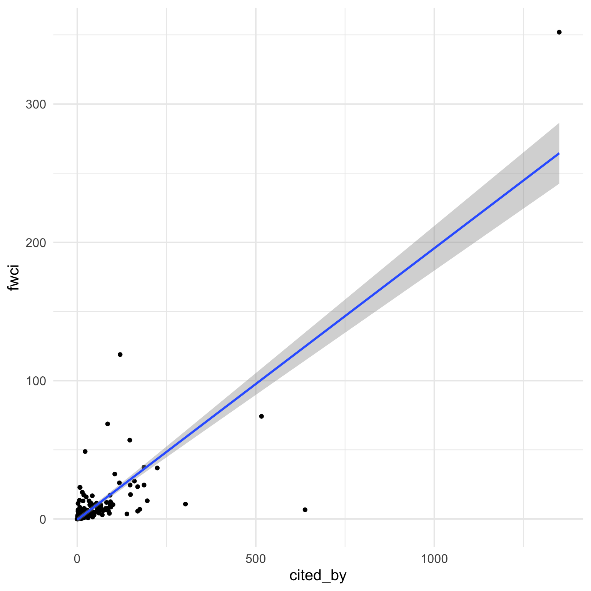

2 Slope
2.1 Open Alex Info
You can get information about papers from Open Alex by DOI or from a papercheck paper object or list.
[1] "id" "doi"
[3] "title" "display_name"
[5] "publication_year" "publication_date"
[7] "ids" "language"
[9] "primary_location" "type"
[11] "type_crossref" "indexed_in"
[13] "open_access" "authorships"
[15] "institution_assertions" "countries_distinct_count"
[17] "institutions_distinct_count" "corresponding_author_ids"
[19] "corresponding_institution_ids" "apc_list"
[21] "apc_paid" "fwci"
[23] "has_fulltext" "fulltext_origin"
[25] "cited_by_count" "citation_normalized_percentile"
[27] "cited_by_percentile_year" "biblio"
[29] "is_retracted" "is_paratext"
[31] "primary_topic" "topics"
[33] "keywords" "concepts"
[35] "mesh" "locations_count"
[37] "locations" "best_oa_location"
[39] "sustainable_development_goals" "grants"
[41] "datasets" "versions"
[43] "referenced_works_count" "referenced_works"
[45] "related_works" "abstract_inverted_index"
[47] "abstract_inverted_index_v3" "cited_by_api_url"
[49] "counts_by_year" "updated_date"
[51] "created_date" Sadly, grobid doesn’t always parse the DOIs in papers correctly. For example, the 11th paper in the psychsci set has a DOI of “10.1177/0956797615603702pss.”, so will produce a warning and no data.
Warning: 10.1177/0956797615588467 not found in OpenAlexWarning: 10.1177/0956797615603702pss. not found in OpenAlex$error
[1] "10.1177/0956797615603702pss."We can get a list of the DOIs of the psychsci set with the info_table() function and then fix them.
doi_table <- info_table(psychsci, "doi")
doi_table |> filter(grepl("[a-z]", doi, ignore.case = TRUE))| id | doi |
|---|---|
| 0956797615603702 | 10.1177/0956797615603702pss. |
| 0956797615620784 | 10.1177/0956797615620784pss. |
| 0956797616634665 | 10.1177/0956797616634665pss. |
| 0956797616667447 | 10.1177/0956797616667447pss. |
| 0956797616671327 | 10.1177/0956797616671327pss.sagepub |
| 0956797616671712 | 10.1177/0956797616671712journals.sagepub. |
Psychological Science DOIs should be entirely numeric, so we can just remove non-numeric characters after the / with a little regex.
Now we can get all of the OpenAlex data from these papers. This will take a few minutes for 250 papers, and I don’t want to have to do this every time I render this book, so I’ll save the results as an Rds object, set this code chunk to not evaluate, and load it from the RDS in the future.
2.2 Tabular Data
Now we need to convert the data from OpenAlex to a table. We’re going to extract some information about dates of publication and citations.
-
cited_by: The number of citations to this work. -
fwci: The Field-weighted Citation Impact (FWCI), calculated for a work as the ratio of citations received / citations expected in the year of publications and three following years
2.3 Plots
2.3.1 Citations by FWCI
The first, simplest plot is looking at the raw number of citations and the field-weighted citation impact.
ggplot(cites, aes(x = cited_by, y = fwci)) +
geom_point() +
geom_smooth(method = "lm", formula = y ~ x)
The data might be better with a log10 scale, although this will remove values of 0, so let’s change any values of 0 to 0.1 and label this as 0 on the plot. First, though, we should check the range of fwci values to find a number we can safely convert zeroes to.
min_non0 <- cites$fwci[cites$fwci > 0] |>
min(na.rm = TRUE)
cites |> filter(fwci > 0) |>
ggplot(aes(x = fwci)) +
geom_histogram(binwidth = 0.1, color = "black", fill = "white") +
geom_vline(xintercept = 0.1, colour = "red") +
scale_x_log10()It looks like setting 0 to 0.1 will be safe for both citation count (where non-zero values logically can’t be lower than 1) and fwci (where non-zero values are all over 0.253).
Plot this new data and change the 0.1 labels to 0.

2.3.2 Interpretation
So now we can tell that number of citations and FWCI are positively related, but not perfectly, so what explains the disrepancy? We can look at the year of publication to see if there is a consistent relationship with time since publication.
ggplot(cites, aes(x = cited_by, y = fwci, colour = year)) +
geom_point(alpha = 0.5) +
geom_smooth(method = "lm", formula = y ~ x, colour = "black") +
scale_x_log10(breaks = c(0.1, 1, 10, 100, 1000),
labels = c(0, 1, 10, 100, 1000)) +
scale_y_log10(breaks = c(0.1, 1, 10, 100, 1000),
labels = c(0, 1, 10, 100, 1000)) +
scale_color_viridis_c()It looks like the more recent papers tend to be above the line, and older papers below the line. But I don’t like showing year as a continuous variable. Let’s convert it to a factor and set the colours using the rainbow() (I like to set v = 0.75 for a darker aesthetic, and only use the values 0-0.8 of the hue range so the start and end values aren’t confusable).
# set colours for each level of the year factor
rb_colours <- cites$year |>
unique() |>
length() |>
rainbow(v = 0.75, end = 0.8, rev = TRUE)
ggplot(cites, aes(x = cited_by, y = fwci, colour = factor(year))) +
geom_point(alpha = 0.5) +
geom_smooth(method = "lm", formula = y ~ x, colour = "black") +
scale_x_log10(breaks = c(0.1, 1, 10, 100, 1000),
labels = c(0, 1, 10, 100, 1000)) +
scale_y_log10(breaks = c(0.1, 1, 10, 100, 1000),
labels = c(0, 1, 10, 100, 1000)) +
scale_color_manual(values = rb_colours)2.3.3 Tidy Up
Clean up the labels with labs().
ggplot(cites, aes(x = cited_by, y = fwci, colour = factor(year))) +
geom_point(alpha = 0.5) +
geom_smooth(method = "lm", formula = y ~ x, colour = "black") +
scale_x_log10(breaks = c(0.1, 1, 10, 100, 1000),
labels = c(0, 1, 10, 100, 1000)) +
scale_y_log10(breaks = c(0.1, 1, 10, 100, 1000),
labels = c(0, 1, 10, 100, 1000)) +
scale_color_manual(values = rb_colours) +
labs(title = "The Relationship between Citations and FWCI",
subtitle = "235 Open Access Psychological Science Papers",
x = "Citation Count",
y = "Field Weighted Citation Impact",
colour = "Publication Year",
caption = "debruine.github.io/30DCC-2025/02-slope") +
theme(legend.position = c(0.15, 0.75),
plot.caption = element_text(color = "dodgerblue"))